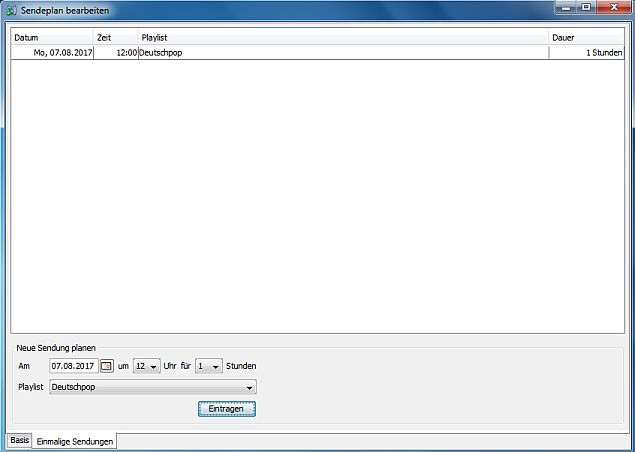

Sendungen eintragen
Du kannst Sendungen für die einmalige Ausstrahlung zu einer bestimmten Zeit an einem bestimmten Datum planen. Öffne dazu zunächst den Sendeplan-Editor wie hier beschrieben und wechsele auf den Tab .
Wähle im Bereich Datum, Uhrzeit, Länge der Sendung und die zu übertragende Playlist aus und klicke auf .
Einmalige Sendungen überlagern die Einträge aus dem normalen Sendeplan. D. h. wenn Du generell Sonntags zwischen 10 und 13 Uhr Playlist X eingetragen hast, für den kommenden Sonntag für diese Zeit aber einmalig Playlist Y einträgst läuft nur an diesem einen Sonntag Playlist Y. Eine einmalige Sendung kann natürlich auch mehrere Sendungen aus dem normalen Sendeplan ganz oder vielleicht auch nur teilweise überlagern. Wenn eine einmalige Sendung endet startet die Sendung aus dem Sendeplan von Anfang an. Um bei dem Beispiel zu bleiben: Angenommen Du trägst Playlist Y nur für den kommenden Sonntag zwischen 11 und 12 Uhr ein dann würde zwischen 10 und 11 Uhr die erste Stunde aus Playlist X laufen, zwischen 11 und 12 Uhr dann Playlist Y und zwichen 12 und 13 Uhr nochmal die erste Stunde aus Playlist X.
Sendungen löschen
Um eine bereits geplante einmalige Sendung zu löschen kannst Du sie in der Tabelle markieren und aus dem Kontextmenü aufrufen. Du kannst auch alle in der Vergangenheit liegenden einmalige Sendungen auf einmal löschen in dem Du aus dem Kontextmenü aufrufst.
Auch wenn dies vom laut.fm Radioadmin Webclient derzeit noch nicht unterstützt wird handelt es sich hier um Funktionalität die die vom laut.fm-Server zur Verfügung gestellt wird. Station Admin muß also nicht laufen um die einmaligen Sendungen auszustrahlen.